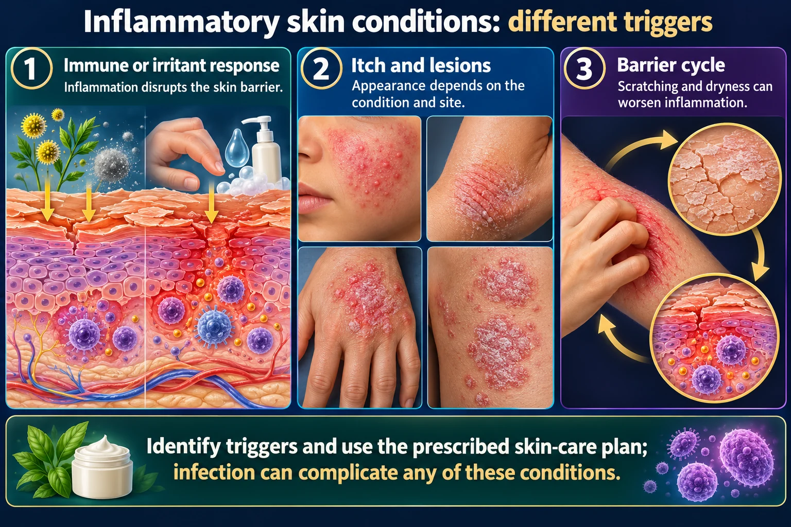

Eczema 🌿
Atopic vs Contact Dermatitis — two itchy rashes with completely different stories
Both look like an angry, itchy rash. The difference is where it came from. Atopic dermatitis is inside-out: an inherited leaky skin barrier plus an over-reactive immune system, flaring for years in the bends of the joints. Contact dermatitis is outside-in: something touched the skin, and the rash is shaped exactly like whatever touched it.
📄 Simple Nursing original — opens in Drive →
Preview the Simple Nursing sheet here
ATOPIC DERMATITIS (ECZEMA)
SIDE A · INSIDE-OUTA chronic, relapsing, inherited condition — the skin's brick wall is leaky and the immune system is trigger-happy.
🧬 Why atopic skin flares — the barrier cutaway

Identify triggers and use the prescribed skin-care plan; infection can complicate any of these conditions.
Read the picture
Immune or irritant response
Inflammation disrupts the skin barrier.
Itch and lesions
Appearance depends on the condition and site.
Barrier cycle
Scratching and dryness can worsen inflammation.
Atopic dermatitis
Chronic itch and barrier dysfunction with an atopic tendency.
Contact dermatitis
A local reaction to an irritant or allergen.
Psoriasis
Immune-mediated inflammation commonly produces well-defined scaly plaques.
🤝 The atopic triad — always ask about all three
These three travel together and often appear in that order through childhood — the "atopic march." A family history of any of them raises the odds of the others. Serum IgE is often elevated and eosinophils may be raised, but the diagnosis is clinical.
⚠️ Cardinal feature: the itch comes first
Atopic dermatitis is "the itch that rashes," not the rash that itches. Pruritus is the defining symptom — it is often worst at night and wrecks sleep for the child and the parents.
- Acute flare: erythematous papules and vesicles, weeping serous exudate, crusting.
- Subacute: drier, scaly, red plaques.
- Chronic: lichenification (thick, leathery skin with exaggerated skin lines), excoriations, pigment change, fissures.
- Always: dry skin (xerosis) between flares. The skin is never truly "normal."
🔬 Acute → subacute → chronic — the same eczema, three faces
🗺️ Where it shows up — and it MOVES with age
This single contrast answers the classic exam confusion. Eczema hides in the creases; psoriasis sits on the points. Full detail on the psoriasis side: NG-225 — Psoriasis.
🎯 What sets off a flare
Food allergy triggers eczema in a minority of infants and young children — do not restrict a child's diet on your own; that needs an allergy evaluation.
🚨 Complications — the two you must recognize
- Secondary bacterial infection (usually Staphylococcus aureus): honey-colored crusting, pustules, worsening redness and pain, fever. Broken, scratched, weeping skin is an open door.
- Eczema herpeticum — herpes simplex spreading across eczematous skin. Clusters of monomorphic "punched-out" vesicles and erosions, rapidly spreading, with fever and a sick-looking child. This is a dermatological emergency — escalate urgently for antiviral treatment.
- Sleep deprivation and its knock-on effects on school, work, mood and family function — ask about it and treat it as a real problem.
- Skin damage from over-scratching: excoriation, lichenification, fissures, and post-inflammatory pigment change (which is very visible and distressing in darker skin).
CONTACT DERMATITIS
SIDE B · OUTSIDE-INSomething touched the skin. The rash is a photograph of whatever it was.
🧪 Irritant vs allergic — two different mechanisms
🔎 The rash is shaped like the culprit
Common culprits to know: irritants — soaps, detergents, solvents, bleach, alcohol gel, frequent hand-washing, saliva (lip-lickers), urine and stool. Allergens — urushiol (poison ivy/oak/sumac), nickel (jewelry, snaps, watch backs, belt buckles), fragrance, preservatives, neomycin, hair dye (PPD) and rubber accelerators in gloves.
🌿 Poison ivy — the myths you have to correct
- Blister fluid does NOT spread the rash. New patches appear later because thinner skin reacts later, or because there was more urushiol there.
- The rash is not contagious person-to-person. But urushiol on clothing, boots, tools, gloves and pet fur absolutely re-exposes you — wash all of it.
- Wash the skin with soap and cool water as soon as possible after exposure — ideally within minutes. Once it is bound, washing no longer prevents the reaction.
- The rash appears hours to a few days after exposure and typically lasts 1–3 weeks.
- Never burn poison ivy — inhaling the smoke can cause severe airway reactions.
- "Leaves of three, let it be" — and cool compresses, calamine, topical steroids; extensive or facial involvement often needs systemic corticosteroids by prescription.
⚠️ Latex — know which reaction you are being asked about
- Irritant contact dermatitis — dry, cracked hands from glove occlusion, powder and hand-washing. Not an allergy at all.
- Type IV allergic contact dermatitis — delayed, itchy, eczematous, usually to rubber accelerator chemicals; appears 24–72 h after wearing gloves.
- Type I latex allergy — IgE-mediated, immediate: urticaria, angioedema, wheeze, anaphylaxis. This is the life-threatening one.
- Cross-reactive foods ("latex–fruit syndrome"): banana, avocado, kiwi, chestnut. Ask about them.
- High-risk groups: healthcare workers, and patients with spina bifida or multiple surgeries.
TELL THEM APART
STEP 3 · COMPAREThe table the exam question is written from.
⭐ Atopic vs Irritant contact vs Allergic contact
| Feature | Atopic dermatitis | Irritant contact | Allergic contact |
|---|---|---|---|
| Cause | Inside-out: inherited barrier defect + over-reactive immune response | Outside-in: direct chemical/physical damage to the barrier | Outside-in: Type IV delayed hypersensitivity (T-cell mediated) |
| Immune memory? | Yes — chronic immune dysregulation, ↑ IgE | No — anyone gets it with enough exposure | Yes — needs prior sensitization |
| First exposure? | N/A — lifelong tendency | Reacts on the first exposure | No reaction the first time; reacts on re-exposure |
| Timing | Chronic, flares and remits over years | Minutes to hours; dose-dependent | 12–72 hours after contact (delayed) |
| Main symptom | Intense itch, worse at night | Burning, stinging > itch | Intense itch |
| Where | Flexural — elbow & knee creases, neck, wrists (infants: cheeks + extensor) | Exactly where the substance touched; hands are classic | Where it touched, but may spread a little beyond |
| Borders | Ill-defined, blends into dry skin | Sharply demarcated, geometric | Sharp-ish, often linear or object-shaped |
| Look | Red plaques, weeping serous exudate in flares, lichenification + excoriations when chronic; always dry | Dry, cracked, glazed, fissured; less vesicle formation | Vesicles, weeping, edema, marked redness |
| Associated with | Asthma + allergic rhinitis (atopic triad), family history | Occupation, wet work, frequent handwashing | A specific allergen — nickel, urushiol, fragrance, neomycin |
| Test | Clinical; ↑ IgE/eosinophils may support | Clinical + exposure history | Patch testing (read at 48 h and again at 72–96 h) |
| Core treatment | Emollients + topical anti-inflammatories + trigger control; long-term | Remove the irritant, barrier protection, emollients | Identify and avoid the allergen; topical (or systemic if severe) steroids |
⚖️ Eczema vs psoriasis — the other classic mix-up
| Eczema (atopic dermatitis) | Psoriasis |
|---|---|
| FLEXURAL — inside the elbows and behind the knees | EXTENSOR — outside of elbows, front of knees, scalp, lower back |
| Itch is severe and the dominant symptom | Itch is variable; may burn or sting instead |
| Ill-defined edges; weeping and crusting in flares | Sharply demarcated, thick plaques with silvery-white scale |
| Lichenification, excoriations, dry skin between flares | Scraping the scale can cause pinpoint bleeding (Auspitz sign); Koebner phenomenon — new plaques at sites of injury |
| Usually starts in infancy/early childhood; may improve with age | Peaks in young adulthood and again later; lifelong |
| Associated with asthma and allergic rhinitis | Associated with psoriatic arthritis, nail pitting/onycholysis, metabolic syndrome |
| Epidermal turnover is normal-ish; the barrier is the problem | Keratinocyte turnover is massively accelerated — days instead of ~28 |
Full detail on the psoriasis side: NG-225 — Psoriasis. The keratinocyte escalator that psoriasis speeds up is drawn on NG-051 — Skin.
🔁 The itch–scratch cycle — why it never just settles
CARE & TEACH
STEP 4 · MANAGEMost of this is teaching — and most of the teaching is about moisturizer.
✅ Atopic dermatitis — the daily routine that actually works
Short (5–10 min), lukewarm bath or shower once daily. Fragrance-free, non-soap cleanser — no bubble bath, no scrubbing, no washcloths on inflamed skin. Pat dry, don't rub.
Apply emollient within about 3 minutes of getting out, while the skin is still damp. Thick ointments and creams beat lotions. Apply liberally, at least twice a day and every time after washing hands — even when the skin looks fine.
Topical corticosteroids to active areas, at the lowest effective potency for the shortest effective time. Use low potency on the face, eyelids, axillae and groin; higher potency is reserved for thick skin like palms and soles. Apply the steroid first, then the emollient over the top (or as directed).
Topical calcineurin inhibitors (tacrolimus, pimecrolimus) for delicate areas and long-term control — expect transient burning/stinging on application and advise sun protection. Severe disease may be escalated to phototherapy or a biologic such as dupilumab. Prescriber-directed.
Cool compresses, cotton clothing, nails cut short and filed smooth, cotton mittens/sleepsuits for infants at night, keep the bedroom cool. Sedating antihistamines are used mainly to help sleep — they do not treat the eczema itself. Wet-wrap therapy for severe flares, per protocol.
Fragrance-free detergent, double-rinse laundry, no fabric softener; cotton not wool; humidify dry indoor air; manage dust mites; manage stress; avoid overheating.
💊 Topical steroid potency by body region — thin skin needs weak steroid
✅ Contact dermatitis — the treatment is detective work
- Identify and remove the agent. Nothing else works if the exposure continues. Take a full history: occupation, hobbies, new products, jewelry, cosmetics, topical medicines, plants, gloves.
- Wash the area with mild soap and cool water as soon as possible after exposure; wash contaminated clothing, tools and pets.
- Cool compresses and colloidal oatmeal baths for weeping, itchy skin; calamine for symptom relief.
- Topical corticosteroids for localized disease; systemic corticosteroids for severe or widespread reactions (classically extensive poison ivy or facial involvement) — prescriber-directed, usually tapered.
- Emollients and barrier creams once the acute weeping settles, especially for irritant hand dermatitis.
- Protect at work — appropriate gloves (cotton liners under occlusive gloves), limit wet work, moisturize after every wash.
- Patch testing if allergic contact dermatitis is suspected and the culprit isn't obvious.
👨👩👧 Teach the family — the sentences that land
- "This is not contagious and it is not your fault." Say it out loud, especially to parents and to school-age children.
- "Moisturizer is medicine." Every day, forever — not only when it flares.
- "Use the steroid properly and you'll use less of it." Under-treating a flare from steroid fear leads to longer, worse flares. Use as prescribed, on the areas prescribed.
- "Short nails, cotton clothes, cool room."
- Call for: honey-colored crusting, pus, fever, rapidly spreading painful blisters/punched-out sores (possible eczema herpeticum), or a flare that doesn't respond to the usual plan.
- Acknowledge the sleep loss, school/work impact and body-image distress — this is a chronic disease, and support matters.
🗺️ Where this page sits in the set
- NG-051 — Skin: the barrier, Langerhans cells and the lesion words (vesicle, plaque, lichenification, excoriation) used all over this page.
- NG-225 — Psoriasis: the extensor-surface, silvery-scale counterpart. Learn the two together or you will mix them up.
- NG-080 — Wound Care: for excoriated, weeping or secondarily infected skin.
WHAT IT LOOKS LIKE
PHOTO GUIDEPanels 1 and 2 are your two dermatitis pictures, side by side with the look-alikes they get confused with.
🖼️ Skin Conditions — visual study guide